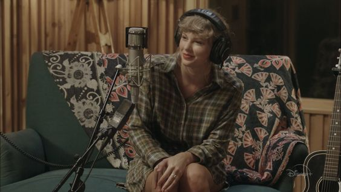

folklore: the long pond studio sessions
The Long Pond Studio Sessions es una película documental que se estrenó el 25 de noviembre de 2020 en Disney+.
Taylor Swift interpreta este concierto íntimo de cada canción de su reciente álbum, “folklore”. Acompañada por sus coproductores y filmada en los históricos Long Pond Studios, un escenario que evoca la naturaleza nostálgica y melancólica del álbum, Taylor habla sobre la creación y el significado de cada canción mientras graban su primera presentación en persona juntos, desde que se conocieron de forma remota. producir la colección.
La película se caracteriza por una producción informal a pequeña escala y una estética de estilo cottage. Aparte de algunos videos caseros de Taylor en el estudio de su casa, la película se grabó en su totalidad en Long Pond Studios en el Hudson Valley de Nueva York, uno de los lugares donde se logró Folklore.
El estudio, originalmente un granero, se había convertido en una cabaña de madera situada en una finca frente al mar.
Dentro del estudio, Swift actuó sentada en un sofá con un vestido camisero a cuadros, cantando directamente en un micrófono, con Antonoff y Dessner tocando instrumentos y un ingeniero en la parte trasera de la sala. Los instrumentos musicales utilizados en la película incluyen una variedad de guitarras, teclados, un bajo Fender, un piano, una caja de ritmos y una caja.
The Long Pond Studio Sessions es mucho más que Taylor cantando canciones de su álbum 'folklore', explica detalladamente cada canción, es como si nos permitiera un lugar en su mente creativa. 